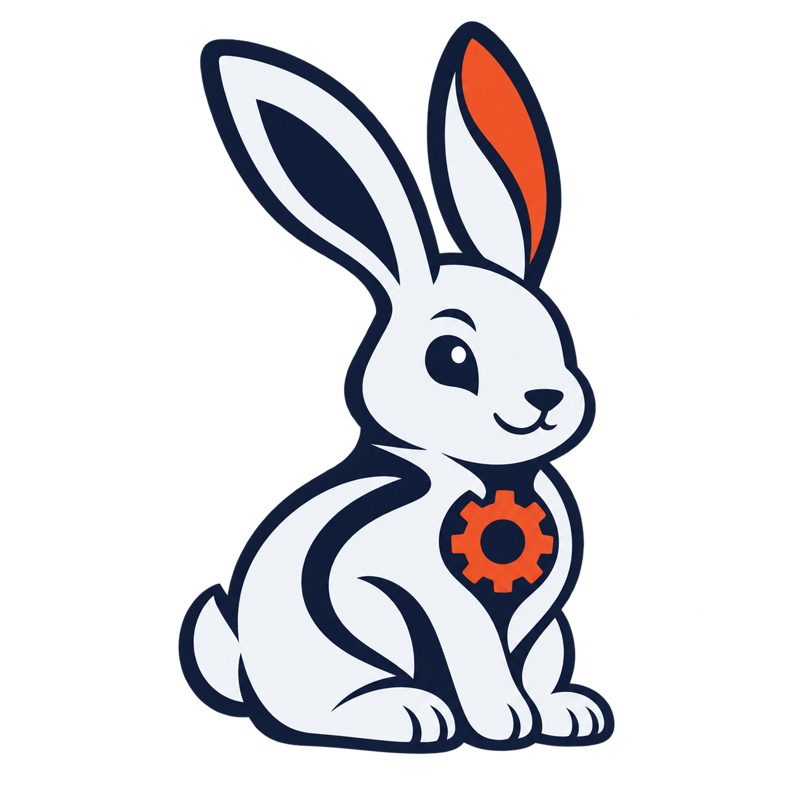

Documentação modular para agentes de IA
Modular documentation for AI agents
O Module Work Plan descreve o sistema por módulo e registra cada mudança numa task pequena, que diz exatamente o que o agente precisa ler. Este guia leva você da instalação à primeira task fechada.
Module Work Plan describes the system by module and records each change in a small task that says exactly what the agent needs to read. This guide takes you from installing to your first closed task.
mwp
GUI mwp-gui
Claude Code · Codex · Cursor · Gemini · Copilot
Rust · Apache-2.0

1O que é o MWPWhat MWP is
Em vez de entregar uma pilha de documentos ao agente a cada pequena mudança, o MWP separa como o sistema é hoje de o que muda.
Instead of handing the agent a pile of documents for every small change, MWP separates how the system is today from what changes.
Como uma parte funciona hoje
How a part works today
Regras (FR-01), os testes que as guardam, contratos e armadilhas. Atualizado a cada mudança, nunca acumula histórico.
Rules (FR-01), the tests that guard them, contracts and pitfalls. Updated with every change, it never piles up history.
O que muda, numa unidade pequena
What changes, in one small unit
Objetivo, escopo, critérios de aceite e os módulos que pode ler e alterar. Imutável depois de concluída.
Goal, scope, acceptance criteria and the modules it may read and write. Immutable once done.
Nasce na task, vive no módulo. Tudo o que continua verdade depois que a task fecha vai para o módulo antes de ela ser concluída. Para executar uma task, o agente lê a constituição, a task e os módulos que ela lista, normalmente de 1 a 3.
Born in the task, lives in the module. Anything still true after a task closes goes into the module before the task is done. To run a task, the agent reads the constitution, the task and the modules it lists, usually 1 to 3.
A pasta mwp/
The mwp/ folder
mwp/ ├── PROJECT.md # visão geral curta: stack, comandos# short overview: stack, commands ├── constitution.md # regras do agente: o que ler, o que pode, quando parar# agent rules: what to read, what is allowed, when to stop ├── map.md # índice gerado dos módulos# generated index of modules ├── glossary.md # termos do domínio (opcional)# domain terms (optional) ├── modules/ # o sistema como é hoje# the system as it is today ├── tasks/open/ T-0043-order-discount.md ├── tasks/done/ # tasks concluídas, nunca editadas# finished tasks, never edited ├── specs/ # SP-0003: especificações grandes demais para um módulo# SP-0003: specs too big for a module ├── decisions/ # ADR-0002: por que uma escolha foi feita# ADR-0002: why a choice was made └── content/ # opcional: ícones, imagens, arquivos de design# optional: icons, images, design files
Quando as fontes discordam, a prioridade é constituição > ADRs aceitos > módulo > task. Se uma task contradiz uma regra, o agente para e pergunta.
When sources disagree, the priority is constitution > accepted ADRs > module > task. If a task contradicts a rule, the agent stops and asks.
2InstalarInstall
Você precisa do Rust (1.85+ para o CLI, 1.95+ para a GUI) e de um clone deste repositório.
You need Rust (1.85+ for the CLI, 1.95+ for the GUI) and a checkout of this repository.
-
Rode o instalador na pasta do repositórioRun the installer from the repository folder
Acrescente
--gui(no Windows,-Gui) para instalar também o editormwp-gui. Sem a opção, só o CLImwpé instalado.Add
--gui(Windows:-Gui) to also install themwp-guieditor. Without it, only themwpCLI is installed.PS> .\src\install.ps1 -GuiSe o PowerShell bloquear scripts:
If PowerShell blocks scripts:
PS> powershell -ExecutionPolicy Bypass -File .\src\install.ps1 -Gui$ ./src/install.sh --gui -
ConfiraCheck it
$ mwp --versionOs scripts avisam se a pasta de instalação do cargo não estiver no
PATH; adicione-a para usarmwpemwp-guide qualquer lugar.The scripts warn if cargo's install folder is not on your
PATH; add it to runmwpandmwp-guifrom anywhere. -
Já quer criar um projeto junto? Passe a pastaWant a project right away? Pass its folder
$ ./src/install.sh --gui ../minha-lojaO instalador roda o
mwp initnela depois de instalar.The installer runs
mwp initthere after installing.
Sem os scripts, é o mesmo que cargo install --path src/client --locked (e src/gui para a GUI). As skills ficam dentro do binário, e os templates ficam nos pacotes default.tar.zst (e outros <nome>.tar.zst), que o instalador coloca ao lado do mwp; com o cargo install sozinho, copie esses arquivos de target/release/. Rode o instalador de novo depois de mudar templates/ ou src/skill/.
Without the scripts it is cargo install --path src/client --locked (and src/gui for the GUI). Skills are built into the binary; templates live in the packages default.tar.zst (and other <name>.tar.zst), which the installer puts next to mwp (with plain cargo install, copy them from target/release/). Run the installer again after changing templates/ or src/skill/.
3Primeiro projetoFirst project
O mwp init cria a estrutura e os arquivos de cada agente, sem nunca sobrescrever nada.
mwp init creates the structure and each agent's files, never overwriting anything.
CLI
$ cd minha-loja $ mwp init --name "Loja" --agent claude,codex
Sem --agent, ele pergunta quais agentes você usa (Claude Code por padrão).
Without --agent, it asks which agents you use (Claude Code by default).
GUI
File > New project…: escolha a pasta, o nome, os agentes e se quer as skills. Ela abre o PROJECT.md no fim.
File > New project…: pick the folder, the name, the agents and whether to install the skills. It opens PROJECT.md at the end.
Projetos recentes aparecem na tela inicial e em File > Open project….
Recent projects show on the start screen and in File > Open project….
Depois do init
After init
- Preencha o projetoFill in the project
mwp/PROJECT.md(stack, comandos) e os<placeholders>demwp/constitution.md.mwp/PROJECT.md(stack, commands) and the<placeholders>inmwp/constitution.md. - Documente o primeiro móduloDocument the first module
Peça ao agente: "Use a skill module para criar os módulos deste projeto", ou crie um com
mwp module new order --summary "Pedidos"(na GUI: + em Modules). Depois rodemwp remap.Ask the agent: "Use the module skill to create the modules for this project", or create one with
mwp module new order --summary "Orders"(GUI: + on Modules). Then runmwp remap. - Crie uma taskCreate a task
$ mwp task new "Desconto por volume" --modules order - Peça ao agenteAsk the agent
"Execute a task T-0001". A skill do MWP ensina o resto: carregar o contexto, reservar a task, implementar e fechar com evidências.
"Execute task T-0001". The MWP skill teaches the rest: load the context, claim the task, implement, close with evidence.
4CLI ou GUI?CLI or GUI?
Os dois usam o mesmo core e os mesmos arquivos: dá para alternar à vontade, e ambos são opcionais (tudo pode ser feito à mão seguindo os templates).
Both use the same core and the same files: switch freely. Both are optional (everything can be done by hand following the templates).
mwp — CLI
Para os agentes e para scripts. É o que a skill manda o agente usar: context, task start, task close, lint. Também serve para CI.
For agents and scripts. It is what the skill tells the agent to use: context, task start, task close, lint. Also good for CI.
- Sem dependências, um binário só
- Saída de texto, código de saída para automação
mwp lint --strictnum pipeline
- No dependencies, a single binary
- Text output, exit codes for automation
mwp lint --strictin a pipeline
mwp-gui — GUI
Para a pessoa que acompanha o trabalho. Ver o quadro, revisar e editar documentos, decidir ADRs e acompanhar os agentes enquanto trabalham.
For the person following the work. See the board, review and edit documents, decide ADRs and watch agents as they work.
- Relê o projeto a cada 2 segundos
- Editor de Markdown com prévia
- Inglês ou português, tema claro ou escuro
- Rereads the project every 2 seconds
- Markdown editor with preview
- English or Portuguese, light or dark theme
| Quero… | I want to… | CLI | GUI | ||
|---|---|---|---|---|---|
| Criar uma task | Create a task | mwp task new "…" | + Tasks > Open · Project > New task | ||
| Ver o que um agente carrega | See what an agent loads | mwp context T-0001 | Botão Context no cabeçalho da task | Context button in the task header | |
| Iniciar / liberar / fechar | Start / release / close | mwp task start|release|close | Botões no cabeçalho, ou arrastar o cartão no quadro | Header buttons, or drag the card on the board | |
| Ver quem trabalha em quê | See who works on what | mwp locks | Seção Agents at work | Agents at work section | |
| Conferir o projeto | Check the project | mwp lint | Painel Problems | Problems panel | |
| Atualizar o mapa | Refresh the map | mwp remap | Botão Update map.md | Update map.md button | |
| Aceitar um ADR | Accept an ADR | — (só uma pessoa decide) | — (only a person decides) | Accept / Reject no cabeçalho | Accept / Reject in the header |
| Adicionar agentes ao projeto | Add agents to a project | mwp init --agent codex | Settings > Project agents… |
5Uma task, do início ao fimA task, start to finish
O ciclo que o agente segue, com o que cada passo faz e onde você acompanha na GUI.
The cycle the agent follows, what each step does and where you follow it in the GUI.
- Criar e descreverCreate and describe
Preencha Goal, Scope e os critérios de aceite. Cada critério diz como é verificado:
[auto: TEST-0007],[manual],[regression],[doc]. Tamanhos: XS e S (curtas), M (testes antes), L (plano aprovado por uma pessoa antes de implementar, com Approve plan na GUI, que defineplan_approved:), XL (como L, com o plano numa SPEC; também para muitos critérios manuais) e XXL (o plano é a divisão em tasks menores).Fill in Goal, Scope and the acceptance criteria. Each criterion says how it is verified:
[auto: TEST-0007],[manual],[regression],[doc]. Sizes: XS and S (short), M (tests first), L (a plan a person approves before implementing, with Approve plan in the GUI, which setsplan_approved:), XL (as L, with the plan in a SPEC; also for many manual criteria) and XXL (the plan is the split into smaller tasks).CLImwp task new "Desconto" --size M --modules order
GUINova task, no quadro ou no exploradorNew task, on the board or in the explorer - Carregar o contextoLoad the context
Constituição, task e o que o front matter cita, com estimativa de tokens.
MISSING= a task cita algo que não existe: o agente para e pergunta.Constitution, task and what its front matter cites, with a token estimate.
MISSING= the task cites something that does not exist: the agent stops and asks.CLImwp context T-0001 --paths
GUIBotão Context (fica vermelho se faltar algo)Context button (turns red when something is missing) - ReservarClaim
Marca
in_progresse bloqueia os módulos da task para esse agente. Se outro agente já os tiver, falha: nunca se contorna.Sets
in_progressand locks the task's modules for that agent. If another agent holds them, it fails: never work around it.CLImwp task start T-0001 --agent claude
GUIStart, ou arrastar para In progressStart, or drag to In progress - Implementar e verificarImplement and verify
Só no código dos módulos da task. Cada critério com evidência; testes existentes são regras e não se mudam para passar.
Only in the code of the task's modules. Every criterion with evidence; existing tests are rules and are never changed to pass.
- Atualizar os módulosUpdate the modules
Regras novas, tabela de testes,
updated:e a linha de changelog com o ID da task.New rules, the tests table,
updated:and the changelog row with the task ID.CLImwp remap
GUIUpdate map.md, se o mapa ficou desatualizadoUpdate map.md, when the map is stale - FecharClose
Com o
## Closurepreenchido: marcadone, move paratasks/done/, libera os bloqueios e roda o lint. Se um critério manual não pôde ser conferido, a task vai parareview. Se o plano não alcança o objetivo, a task fecha comoreplanned: critérios não cumpridos com[-]e o motivo em**Replanning:**.With
## Closurefilled in: setsdone, moves totasks/done/, frees the locks and runs lint. If a manual criterion could not be checked, the task goes toreview. If the plan cannot reach the goal, the task closes asreplanned: unmet criteria marked[-]and the reason in**Replanning:**.CLImwp task close T-0001 mwp task review T-0001 mwp task close T-0001 --replanned
GUIClose, Status, Replan, ou arrastar para DoneClose, Status, Replan, or drag to Done
6Tour da GUIGUI tour
Rode mwp-gui dentro de um projeto, ou mwp-gui caminho/do/projeto.
Run mwp-gui inside a project, or mwp-gui path/to/project.
Explorador
Explorer
Arquivos por seção, com subpastas. Botão direito: novo, renomear (F2), excluir, copiar caminho. Arraste arquivos entre pastas de Modules ou Content.
Files by section, with subfolders. Right-click: new, rename (F2), delete, copy path. Drag files between folders of Modules or Content.
Editor
Editor
Abas, código com destaque e prévia lado a lado. IDs viram links (Ctrl+clique no código). Avisa quando um agente muda o arquivo aberto e mostra as diferenças.
Tabs, highlighted source and preview side by side. IDs become links (Ctrl+click in the source). Warns when an agent changes the open file and shows the differences.
Quadro
Board
Uma coluna por status. Arraste um cartão para mudar o status; filtre por texto, módulo, agente e tamanho.
One column per status. Drag a card to change its status; filter by text, module, agent and size.
Atalhos
Shortcuts
| Ctrl P | Ir para arquivo (nome, ID ou título) | Go to file (name, ID or title) |
| Ctrl F · Ctrl H | Buscar · substituir no arquivo | Find · replace in the file |
| Ctrl Shift F | Buscar (e substituir) no projeto inteiro | Find (and replace) in the whole project |
| Ctrl S · Ctrl Shift S | Salvar · salvar tudo | Save · save all |
| Ctrl W · Ctrl Tab | Fechar aba · próxima aba | Close tab · next tab |
| F2 | Renomear o arquivo aberto | Rename the open file |
Settings > Preferences: idioma (inglês ou português; outros por arquivo JSON em <config>/mwp-gui/lang/), tema, tamanho e fonte do texto. A GUI lembra janela, painéis, abas e filtros de cada projeto.
Settings > Preferences: language (English or Portuguese; others through a JSON file in <config>/mwp-gui/lang/), theme, text size and font. The GUI remembers the window, panels, tabs and filters of each project.
7Vários agentes ao mesmo tempoSeveral agents at once
O estado dos agentes fica em arquivos simples em .mwp/, então vários agentes (e a GUI) podem trabalhar no mesmo projeto.
Agent state lives in plain files in .mwp/, so several agents (and the GUI) can work on one project.
Reserva
Claim
Uma task em andamento pertence a um agente (.mwp/claims/).
A task in progress belongs to one agent (.mwp/claims/).
Bloqueio
Lock
Um módulo tem um escritor por vez (.mwp/locks/). Outro agente que tente o mesmo módulo recebe um erro.
A module has one writer at a time (.mwp/locks/). Another agent trying the same module gets an error.
IDs
IDs
mwp next T --reserve grava o ID no .mwp/ledger.json, versionado: dois agentes nunca pegam o mesmo.
mwp next T --reserve records the ID in the versioned .mwp/ledger.json: two agents never get the same one.
Nunca edite .mwp/ à mão. Se um agente parar no meio, libere a task (mwp task release ou o botão Status) para os módulos ficarem livres.
Never edit .mwp/ by hand. If an agent stops halfway, release the task (mwp task release or the Status button) so its modules are free again.
8Agente local com LM StudioA local agent with LM Studio
O LM Studio serve o modelo numa API compatível com a da OpenAI; quem lê arquivos e roda o mwp é um agente de linha de comando, como o Codex CLI, apontado para ela.
LM Studio serves the model on an OpenAI-compatible API; a command-line agent such as Codex CLI, pointed at it, is what reads files and runs mwp.
- No LM StudioIn LM Studio
Use um modelo com tool calling, aumente o tamanho de contexto e inicie o servidor local (por padrão em
http://localhost:1234/v1).Use a model with tool calling, raise its context length and start the local server (by default at
http://localhost:1234/v1). - No Codex:
~/.codex/config.tomlIn Codex:~/.codex/config.toml[model_providers.lmstudio] name = "LM Studio" base_url = "http://localhost:1234/v1" [profiles.local] model_provider = "lmstudio" model = "identificador-do-modelo-no-lm-studio" - No projetoIn the project
$ mwp init --agent codex $ codex --profile local
E peça "Execute a task T-0001". Comece com uma task pequena: modelos menores costumam pular passos do fluxo.
Then ask "Execute task T-0001". Start with a small task: smaller models tend to skip steps of the workflow.
9Referência rápida do CLICLI quick reference
| Comando | Command | O que faz | What it does |
|---|---|---|---|
mwp init | Cria mwp/ e os arquivos de cada agente; nunca sobrescreve | Creates mwp/ and each agent's files; never overwrites | |
mwp task new · task-list | Cria uma task com o próximo ID · lista as tasks | Creates a task with the next ID · lists tasks | |
mwp task start|close|release | Reserva e bloqueia · fecha e roda o lint · devolve | Claims and locks · closes and runs lint · gives back | |
mwp context T-0001 | O que o agente lê, com estimativa de tokens | What the agent reads, with a token estimate | |
mwp locks | Tasks em andamento, agentes e módulos bloqueados | Tasks in progress, agents and locked modules | |
mwp next <T|SP|ADR|TEST> | Próximo ID livre (--reserve grava no ledger) | Next free ID (--reserve records it in the ledger) | |
mwp module new · spec new · adr new | Cria módulo, SPEC ou ADR a partir do template | Creates a module, SPEC or ADR from its template | |
mwp content add | Copia recursos para mwp/content/ | Copies resources into mwp/content/ | |
mwp delete <id> | Apaga módulo, SPEC, task não concluída ou content (pede confirmação) | Deletes a module, SPEC, task not done or content file (asks first) | |
mwp remap · map | Reconfere os módulos e regenera map.md | Rechecks modules and regenerates map.md | |
mwp lint | Confere o projeto todo; código de saída 1 se houver erros | Checks the whole project; exit code 1 on errors |
mwp --help lista todos os comandos e opções.
mwp --help lists every command and option.
10Problemas comunsTroubleshooting
mwp: command not found
A pasta bin do cargo não está no PATH. O instalador mostra o caminho; adicione-o e abra um terminal novo.
Cargo's bin folder is not on your PATH. The installer prints the path; add it and open a new terminal.
O PowerShell bloqueia o script
PowerShell blocks the script
Rode com powershell -ExecutionPolicy Bypass -File .\src\install.ps1.
Run it with powershell -ExecutionPolicy Bypass -File .\src\install.ps1.
MISSING no contextin context
A task cita um ID que não existe (módulo, SPEC, ADR ou task). Corrija o front matter ou crie o que falta.
The task cites an ID that does not exist (module, SPEC, ADR or task). Fix the front matter or create what is missing.
task start falha
task start fails
Outro agente tem a task ou um dos módulos. Veja com mwp locks (ou Agents at work) e espere, ou libere a task se o agente parou.
Another agent holds the task or one of its modules. Check with mwp locks (or Agents at work) and wait, or release the task if that agent stopped.